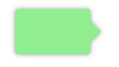
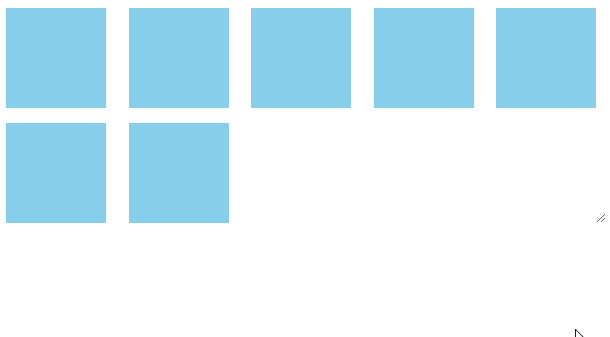
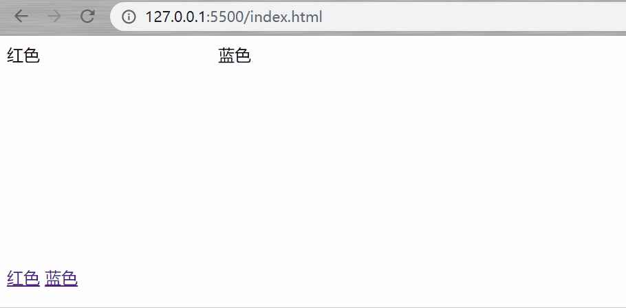
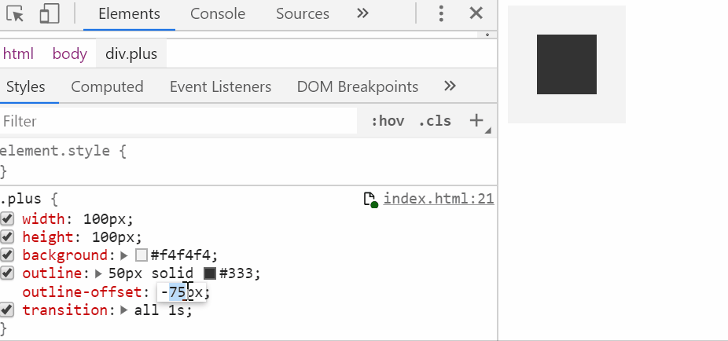

.text{
width: 200px;
text-overflow: ellipsis;
white-space: nowrap;
overflow: hidden;
}-webkit-line-clamp属性值为需要截断的行数.text{
display: -webkit-box;
-webkit-line-clamp: 2;
-webkit-box-orient: vertical ;
overflow: hidden;
}选中不在此范围内的元素，例如：div:not(:last-child)，选中除最后一个div的所有div元素
有时候在做列表时需要为每项添加下边框线，但最后一个项不需要边框线
.item:not(:last-child){
border-bottom: 1px solid #ddd;
}pointer-events 指定鼠标如何与元素进行交互，设置为none，阻止任何鼠标事件对其的作用
.item{
pointer-events: none;
}vertical-align 用来指定行内元素（inline）或 表格单元格（table-cell）元素的垂直对齐方式。
子元素设置line-height:1，为了不继承父元素的行高
<p>
<span>顶部对齐</span>
</p>p{
line-height:3;
}
span{
line-height:1;
vertical-align:top;
}有时候需要在组件中局部修改第三方组件的样式，而又不想去除scoped属性造成组件之间的样式污染。
此时只能通过>>>，穿透scoped。
有些Sass 之类的预处理器无法正确解析 >>>。可以使用 /deep/ 操作符 或 ::v-deep( >>> 的别名)
<style scoped>
外层 >>> 第三方组件类名 {
样式
}
/deep/ 第三方组件类名 {
样式
}
</style>当宽度设置为一些自适应的值时（%、vw等），高度的值无法确定，这时可以使用 padding-top:100% 来解决高度的问题，因为 padding 的值参照于 width
<div class="parent">
<div class="child">
这里是内容
</div>
</div>.parent{
position: relative;
width: 50vw;
height: 0;
padding-top: 100%;
}
.child{
position: absolute;
width: 100%;
height: 100%;
}input{
caret-color: #dd3131;
}一般投影效果都会使用box-shadow来完成，但在一些不规则的形状下达不到预想的效果，这时可以使用drop-shadow来完成。

div{
filter: drop-shadow(0 0 6px #ddd);
}在ios端中滚动容器不会有惯性滚动，用户在滑动时会出现明显的卡顿感，添加以下属性可解决问题
-webkit-overflow-scrolling: touch;
.list {
display: grid;
justify-content: space-between;
grid-template-columns: repeat(auto-fill, 100px);
grid-gap: 10px;
}
.item{
width: 100px;
background: skyblue;
}检测浏览器是否支持CSS的属性值，通过则应用代码块
.box{
width: 100px;
height: 100px;
background: skyblue;
}
@supports (display: grid) {
.box{
background: slateblue;
}
}
/* 两个属性支持即通过，类比 && */
@supports (display: grid) and (display: flex) {
/* css style */
}
/* 其中一个属性支持即通过，类比 || */
@supports (display: grid) or (display: flex) {
/* css style */
}
/* 该属性不支持即通过，类比 ! */
@supports not (display: grid) {
/* css style */
}查看兼容性：https://www.caniuse.com/#search=%40supports
地址栏后面跟有锚名称 #，指向文档内某个具体的元素。比如，地址为 loacalhost:3000#red，则选择中ID属性值为red的元素，可以应用到网页换肤功能中。

<style>
div{
display: inline-block;
width: 200px;
height: 200px;
}
#red:target{
background: lightpink;
}
#blue:target{
background: lightblue;
}
</style>
<body>
<div id="red">
<span>红色</span>
</div>
<div id="blue">
<span>蓝色</span>
</div>
<p>
<a href="#red">红色</a>
<a href="#blue">蓝色</a>
</p>
</body>
想要实现加号需要符合以下几点：
1.容器是个正方形
2.outline 边框的尺寸不能太小
3.outline-offset 的取值范围: -(容器宽度的一半 + outline宽度的一半) < x < -(容器宽度的一半 + outline宽度)
.plus {
width: 100px;
height: 100px;
background: #f4f4f4;
outline: 50px solid #333;
outline-offset: -99px;
}
不定时更新~